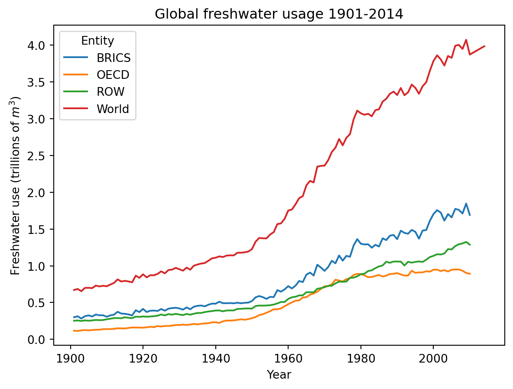
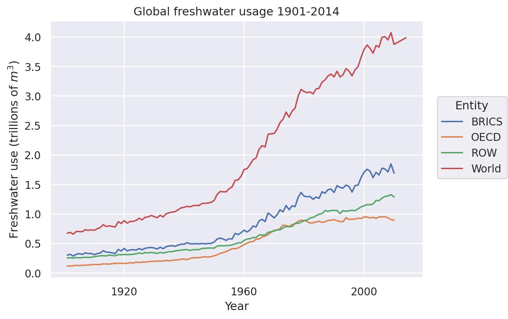
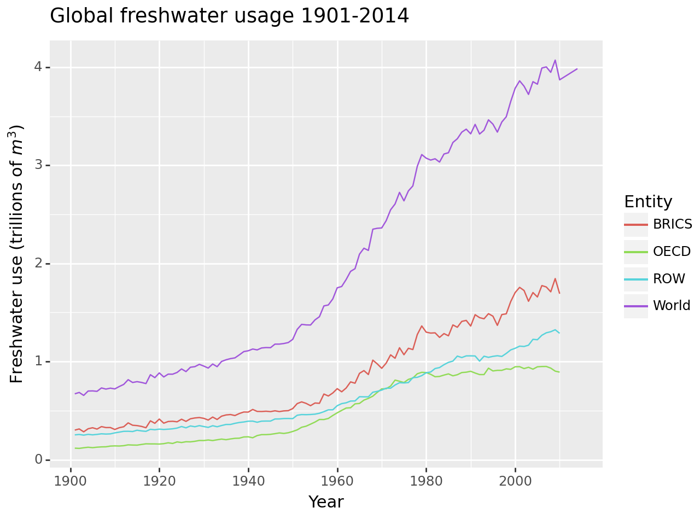

import numpy as np
import pandas as pd
import altair as alt1 Introduction
Inspired by this great workshop1 by Angelica Lo Duca, I wanted to try out Altair and see how it compares to the other visualisation libararies I’ve come to know and love. Altair is a declarative visualisation library (I’m more used to imperative ones like matplotlib) and is built on the powerful Vega-Lite grammar of graphics.
Similar to tools like seaborn, Altair is intended for creating statistical visualisation with ease. It has a rich set of interactive features enabled by the use of JavaScript under the hood. This also means it all runs in the browser, which is a huge plus for those who want some interactivity without adding a full web app deployment with its own Python interpreter (e.g. running streamlit).
Altair also features powerful data manipulation routines such as aggregation, and statistical functions. This means you you can use the same data frame in multiple plots, because you’re doing the processing in the creation of the plot (as we’ll see below).
2 Using Altair
Let’s take Altair for a spin! I wanted to use some climate data as was done in the webinar, so I picked a historical freshwater usage dataset, with data from various regions of the world from 1900-20142. The basic idea for creating any visualisation is to combine different visual elements and encode the information in different channels such as colour, size, shape, etc. just as done originally in the ggplot2 package. This allows you to easily extract insights from the data.
A basic Altair plot can be created as follows:
# Read the data
df = pd.read_csv("./data/global-freshwater-use-over-the-long-run.csv")
# The world uses a lot of water, mesure it in trillions of m^3
df['Freshwater use']/=1e12
# Convert to datetime object
df['Year'] = pd.to_datetime(df['Year'].astype(int).astype(str))# We will use this for all plots
title = "Global freshwater usage 1901-2014"
# Set custom range
domain = ["1900-01-01", "2015-12-31"]
# The main chart
main = (
alt.Chart(
df,
title=alt.Title(
text=title,
),
)
.mark_line()
.encode(
# Note the "T" and "Q" in the specification of the axes
# They tell Altair what type of data to expect
x=alt.X("Year:T", axis=alt.Axis(title="Year"),scale=alt.Scale(domain=domain)),
y=alt.Y(
"Freshwater use:Q", axis=alt.Axis(title="Freshwater use (trillions of m³)")
),
# We sort the colors so that the legend will be in the same order as
# the curves appear
color=alt.Color("Entity").sort(
field="Freshwater use", op="max", order="descending"
),
)
)
mainOf course, Altair does give us some control over customisation, so let’s proceed to build more and more sophisticated visualisations. As a first step, let’s change things to make it a little more presentable.
def opensanstheme():
"""
Set the font to Open Sans everywhere we care.
Note this requires Open Sans font to be installed.
"""
font = "Open Sans"
return {
"config": {
"title": {"font": font},
"axis": {"labelFont": font, "titleFont": font},
"header": {"labelFont": font, "titleFont": font},
"legend": {
"labelFont": font,
"titleFont": font,
},
}
}
alt.themes.register("opensans", opensanstheme)
alt.themes.enable("opensans")
golden = 1.618
width = 600
height = width / golden
font_props = dict(
labelFontSize=14, titleFontSize=16, labelFontWeight=100, titleFontWeight=100
)
main.properties(width=width, height=height).configure_axis(
**font_props
).configure_legend(**font_props).configure_title(fontSize=32, fontWeight=100)Note that in Altair, the theme is just a function that returns a dict. This way you can serialise your favourite customisations to json and just load them, similar to matplotlib style files.
Finally, to make things more interesting, we’ll use the prophet library to create a model for the freshwater consumption for the entire world and try to use it to predict usage on a validation set. This lets us showcase Altair’s ability to create more compelling data stories.
2.1 Making the model
Prophet allows us to very quickly build a reasonable predictive model, with no tuning needed (in this very simple case). Of course, we could have used any other method, like ARIMA models from skforecast or Gaussian Process Regression from sklearn.
from prophet import Prophet
# Select data for whole world
train_data = df[df['Entity']=='World']
# Last 10 points will be our validation set
prophet_data = train_data[['Year','Freshwater use']].iloc[:-10].copy()
prophet_data = prophet_data.reindex()
# Prophet requires the DataFrame to have particular column names
rs = prophet_data.rename(columns={'Year':'ds','Freshwater use':'y'})
m = Prophet()
m.fit(rs)
# Predict data into the future, namely 14 years
# (this is because our dataset is *not* evently spaced)
future = m.make_future_dataframe(periods=14,freq='Y')
forecast = m.predict(future)00:09:36 - cmdstanpy - INFO - Chain [1] start processing
00:09:36 - cmdstanpy - INFO - Chain [1] done processingLet’s now plot the predictions, carefully distinguishing the training from the test part. We can use Altair’s transform_filter to do this.
# The fit prediction on the training data
fit = (
alt.Chart(forecast)
.mark_line(color="black")
.encode(
x="ds:T",
y="yhat:Q",
)
).transform_filter("year(datum.ds)<=2001")
# The fit error on the training data
band = (
alt.Chart(forecast)
.mark_errorband(color="black")
.encode(
alt.X("ds:T"),
alt.Y("yhat_lower:Q", axis=alt.Axis(title="")),
alt.Y2("yhat_upper:Q"),
)
).transform_filter("year(datum.ds)<=2001")
# The fit prediction extrapolating outside training data
fit_extr = (
alt.Chart(forecast)
.mark_line(color="red")
.encode(
x="ds:T",
y="yhat:Q",
)
).transform_filter("year(datum.ds)>=2001")
# The fit error extrapolating outside training data
band_extr = (
alt.Chart(forecast)
.mark_errorband(color="red")
.encode(
alt.X("ds:T"),
alt.Y("yhat_lower:Q", axis=alt.Axis(title="")),
alt.Y2("yhat_upper:Q"),
)
).transform_filter("year(datum.ds)>=2001")
total = main + fit + band + fit_extr + band_extr
total.properties(width=width, height=height).configure_axis(
**font_props
).configure_legend(**font_props).configure_title(fontSize=32, fontWeight=100)Our prediction isn’t bad! Looks like prophet does a decent job extrapolating here.
The plot looks good, but it would be great if we could toggle the forecast on and off interactively. Let’s add a checkbox to our plot for this.
# Make the checkbox and bind a parameter to it
bind_checkbox = alt.binding_checkbox(name="Toggle forecast: ")
checkbox_selection = alt.param(bind=bind_checkbox)
# Everything fit related
total_fit = fit + band + fit_extr + band_extr
total = main + total_fit.add_params(checkbox_selection).transform_filter(
checkbox_selection
)
total.properties(width=width, height=height).configure_axis(
**font_props
).configure_legend(**font_props).configure_title(fontSize=32, fontWeight=100)3 Comparison with other tools
Python is widely known for its huge ecosystem of various visualisation libraries. In fact, it has so many that I don’t try to be exhaustive in my comparison. The most similar libraries to Altair would be other declarative packages like seaborn, plotnine, plotly express, and letsplot. All of these share the same basic characteristics, where different aspects of the data are easily mapped to different channels that correspond to different plot attributes (e.g. color,shape,size).
Contrast this with matplotlib, which is an imperative: you have to tell it exactly what to do. While this frequently requires more code to create comparatively sophisticated plots, matplotlib does have the advantage of complete control over every element of the plot.
Below let’s see some examples of how to create the basic verion of the plot we showed in the first section across a spectrum of libraries.
3.1 seaborn
seaborn is a widely-used statistical data visualisation library built on top of matplotlib. It has many different kinds of visualisations and is actively developed.
The standard way to create our plot in seaborn is as follows
import seaborn as sns
ax = sns.lineplot(df,x='Year',y='Freshwater use',hue='Entity')
ax.set_ylabel(f"Freshwater use (trillions of $m^{3}$)")
ax.set_title(title)Text(0.5, 1.0, 'Global freshwater usage 1901-2014')
Notice that, while it is similar in spirit to Altair, it doesn’t quite feature the same flavour of composability. Since version 0.12, seaborn introduced a new more consistent interface, seaborn.objects. Although seaborn.objects still has some rough edges, here is how you would create the same plot nevertheless:
import seaborn.objects as so
(
so.Plot(df, x="Year", y="Freshwater use", color="Entity")
.add(so.Line())
.label(
y=f"Freshwater use (trillions of $m^{3}$)",
title=title,
)
)
3.2 plotly
Plotly is a highly sophisticated interactive data visualisation library, which includes many types of plots and has support for 3D plotting and LaTeX rendering. It is actually imperative, but has a declarative version (heavily inspired by ggplot2 and seaborn), plotly-express, which is designed for the most common types of plots.
Here is our plot using plotly-express:
import plotly.express as px
fig = px.line(
df, x="Year", y="Freshwater use", color="Entity", title=title,
labels={
"Freshwater use":r"Freshwater use (trillions of $m^{3}$)"
},
width=width, height=height
)
fig.show()3.3 Lets-Plot
Lets-Plot is a relatively new visualisation library but it is very feature-rich and supports quite complex interactions. It also follows incredibly closely the same syntax as ggplot2 does in R. Here is the basic version of the plot above:
from lets_plot import aes,geom_line, ggplot, ggtitle, LetsPlot, ylab
LetsPlot.setup_html()
(
ggplot(df, aes(x="Year", y="Freshwater use", color="Entity"))
+ geom_line()
+ ylab("Freshwater use (trillions of m³)")
+ ggtitle(title)
)3.4 plotnine
plotnine is another implementation of the grammar of graphics based on ggplot2 and built on top of matplotlib. It is not as rich in types of plots as the other libraries, but is very customisable thanks to inheriting the power of matplotlib.
The standard way to create our plotnine plot is:
# NOTE: This will override the previous imports from lets-plot!
# We only do this here for demonstration purposes
from plotnine import *
(
ggplot(df, aes("Year", "Freshwater use", color="Entity"))
+ geom_line()
+ scale_x_datetime(date_labels="%Y") # Display only year from the date
+ labs(y=f"Freshwater use (trillions of $m^{3}$)", title=title)
)
4 Takeaways
Altair is a useful tool in the data analysis and visualisation toolbox, especially for building interactive statistical visualisations. Overall, I was impressed!
In terms of drawbacks, the main one for me was comparative lack of flexibility, a limited number of plot types (no quiver plots, alas) and unfortunately no \(\LaTeX\) support 😢 3
However, I liked the flexibility of assembling a complicated plot piece-by-piece with intuitive syntax. The consistent set of attributes and intuitive class structure across various plot elements makes you feel like you really can plug and play.
This wraps up our brief foray into Altair. We have barely scratched the surface of what it’s capable of and I’m sure I will continue to come back to it.